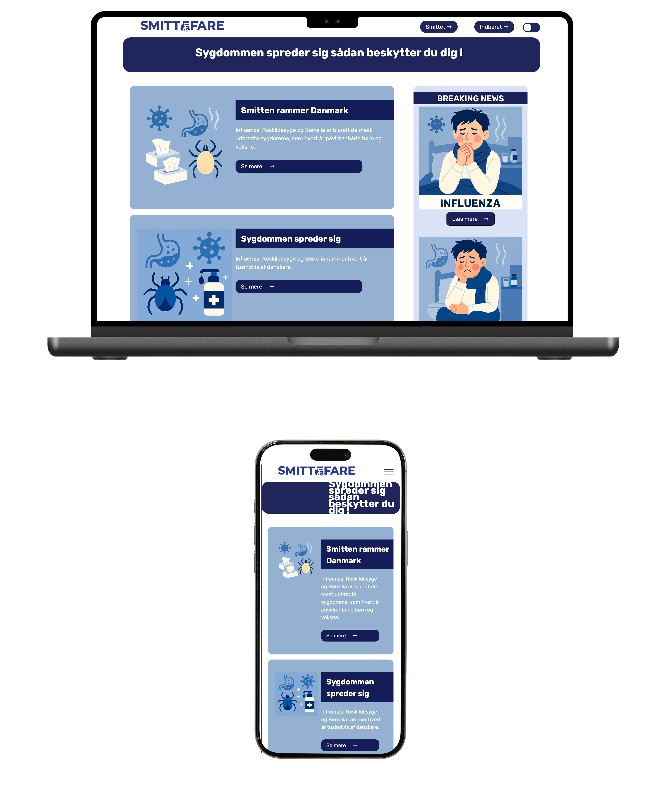
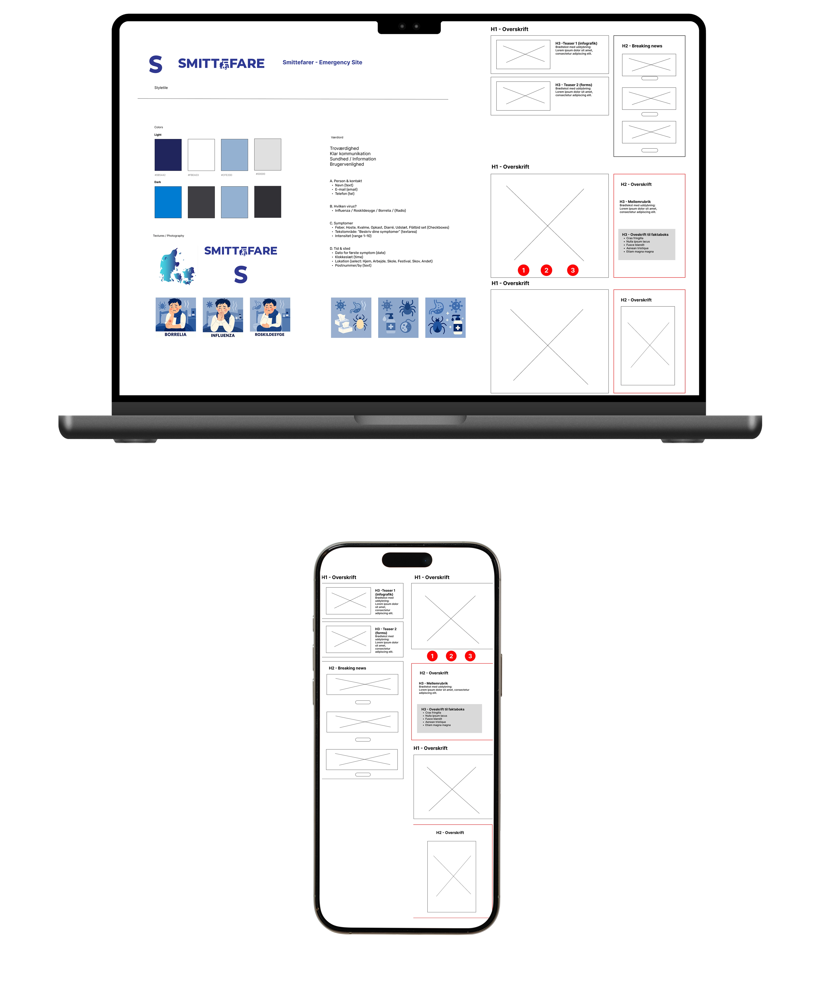
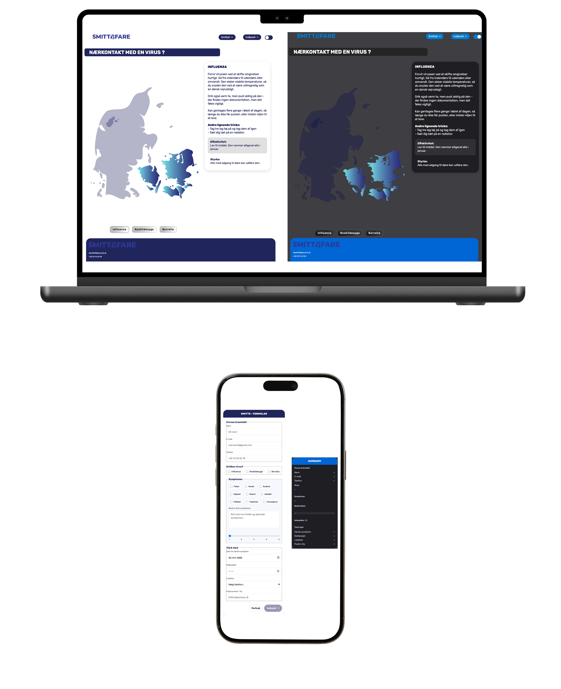
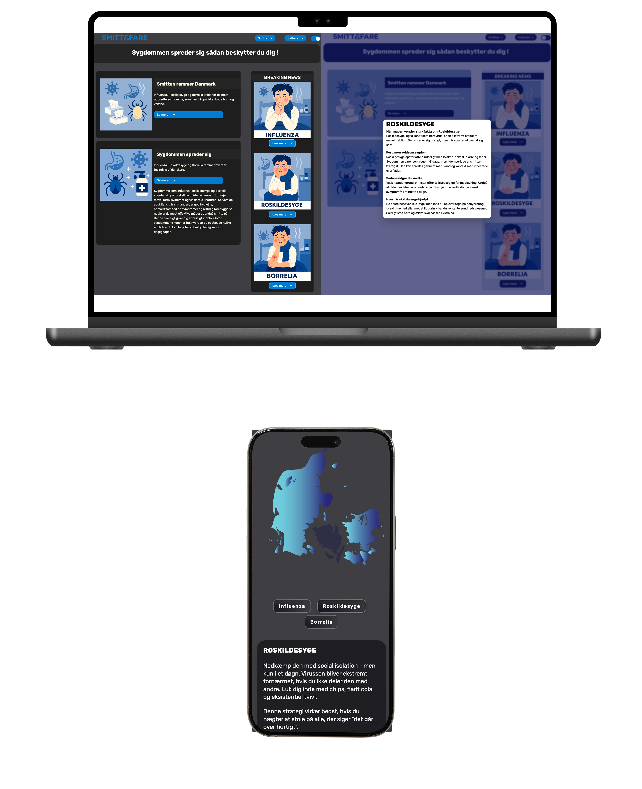

Emergencysite
Tema 4 - Grundlæggende brugergrænsefladeudvikling
Introduktion
I Tema 4 arbejdede jeg med udvikling af brugergrænseflader med fokus på samspillet mellem visuelt design og frontend-teknologi.
Temaet introducerede mig til mere avanceret brug af CSS samt grundlæggende JavaScript til interaktivitet. Derudover arbejdede jeg med design af UI-elementer og formularer samt implementering af disse i et fungerende website. I processen anvendte jeg Adobe Illustrator til at designe og eksportere SVG-grafik, som blev brugt direkte i sitet.
Projektet hed Emergency site - Smittefare og havde fokus på at formidle vigtig information på en klar, struktureret og brugervenlig måde gennem et funktionelt website.
Løsning
Opgaven bestod i at designe og udvikle et informativt og interaktivt website, der guider brugeren i forhold til smittefare, symptomer og handling. Websitet indeholder både informationssider og en interaktiv formular, hvor brugeren kan indberette symptomer og få et overblik.
Løsningen er designet med både light- og dark mode og har fokus på tydelig informationsformidling, overskuelige UI-elementer og en sammenhængende visuel stil.

Proces
Arbejdet startede med udvikling af et visuelt grundlag i Figma, herunder styletile, farver, typografi og komponenter. Jeg designede forskellige UI-elementer såsom kort, knapper, navigation og formularfelter, som blev genbrugt på tværs af sitet.
Herefter arbejdede jeg med implementering af designet i HTML og CSS, hvor jeg anvendte mere avancerede styling-teknikker for at sikre konsistens og fleksibilitet. I implementeringen indgik SVG-grafik designet i Adobe Illustrator samt AI-genererede billeder, som blev integreret direkte i sitet.
JavaScript blev desuden anvendt til at håndtere interaktivitet, herunder skift mellem light og dark mode samt funktionalitet i forbindelse med formularen og brugerens input.
Undervejs testede jeg løbende design og funktionalitet for at sikre, at brugergrænsefladen var intuitiv og nem at anvende i forskellige situationer og visningstilstande.

Læring
- Jeg lærte at udvikle og implementere UI-elementer som en del af et samlet design system, herunder at designe og implementere SVG-grafik fra Adobe Illustrator.
- Jeg fik erfaring med at arbejde med formularer og brugerinput i frontend samt at implementere light og dark mode som en del af brugergrænsefladens funktionalitet.
- Jeg blev mere sikker i brugen af CSS til komplekse layouts og visuelle variationer.
- Jeg fik en bedre forståelse for, hvordan JavaScript kan bruges til at skabe interaktivitet.

Reflektion
Tema 4 har styrket min forståelse for frontend-udvikling og for, hvordan design og funktionalitet hænger tæt sammen i udviklingen af brugergrænseflader.
Projektet har givet mig erfaring med at omsætte visuelle koncepter til fungerende løsninger og har været et vigtigt skridt i min tekniske udvikling.
